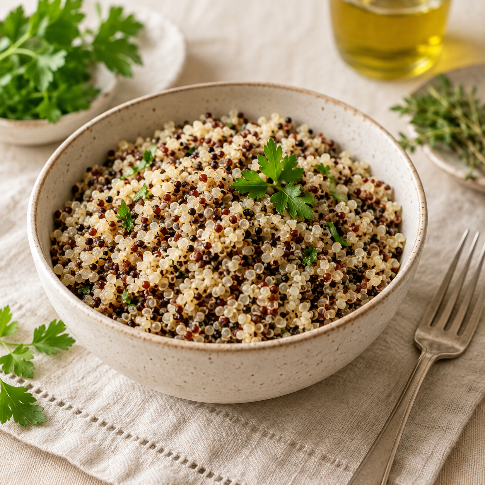

Cuisson de base Quinoa trio bio U 11-12 min + 10 min de reposGuides
Repères pratiques pour les cuissons, le meal prep, les équivalences et les astuces de conservation.
Guides disponibles
Cuisson de base
Quinoa trio bio U
Pour un mélange 60 % quinoa blanc, 20 % quinoa rouge et 20 % quinoa noir. Idéal pour les salades froides : les grains rouges et noirs restent naturellement plus fermes.
Quantités
- 200 g de quinoa trio bio U
- 330 ml d’eau
Méthode
- Rincer soigneusement le quinoa à l’eau froide.
- Mettre le quinoa et l’eau dans une casserole.
- Porter à ébullition.
- Dès l’ébullition, couvrir et baisser au feu le plus doux possible.
- Cuire 11 à 12 minutes, sans remuer.
- Couper le feu et laisser reposer 10 minutes à couvert.
- Égrener à la fourchette.
- Étaler sur un grand plat pour le refroidir, plutôt que de le laisser dans la casserole.
Valeurs nutritionnelles estimées du quinoa cuit
| Quantité | Calories | Protéines | Glucides | Lipides | Fibres |
|---|---|---|---|---|---|
| 100 g cuit | ≈ 120 kcal | ≈ 4,4 g | ≈ 21,3 g | ≈ 1,9 g | ≈ 2,8 g |
Le poids cuit peut varier légèrement selon l’évaporation et le temps de repos.
Cuisson de base
Œufs durs Air Fryer
Une méthode simple pour cuire plusieurs œufs en même temps, sans casserole, avec deux textures de jaune possibles.
Repères cuisson
- 130 °C pendant 14 minutes : œuf dur.
- 130 °C pendant 12 minutes : jaune un peu moins cuit.
- Quantité d’œufs au choix, selon la taille du panier.
Méthode
- Déposer les œufs directement dans le panier de l’Air Fryer.
- Cuire à 130 °C selon la texture souhaitée.
- Plonger les œufs dans un bol d’eau froide après cuisson.
- Laisser tiédir pour stopper la cuisson et faciliter l’écalage.
- Écaler les œufs ou les conserver avec leur coquille.
Valeurs nutritionnelles indicatives
| Quantité | Calories | Protéines | Glucides | Lipides |
|---|---|---|---|---|
| 1 œuf moyen | ≈ 70 kcal | ≈ 6 g | ≈ 0,5 g | ≈ 5 g |
Conservation : jusqu’à 7 jours au réfrigérateur, avec ou sans coquille, dans une boîte hermétique.
Cuisson au four
Cuisses de poulet avec légumes
Une cuisson vapeur puis chaleur tournante pour garder les cuisses moelleuses, avec une peau dorée et des légumes fondants.
Réglages
- Mode HydraCook + Chaleur tournante Plus.
- Température : 190 °C.
- 1 injection de vapeur au début, idéalement dans les 5 premières minutes.
- Cuisson totale : 55 à 65 minutes.
Méthode
- Déposer les légumes, pommes de terre et oignons dans le plat.
- Poser les cuisses de poulet directement sur les légumes, peau vers le haut.
- Lancer la cuisson à 190 °C avec 1 injection de vapeur au début.
- Vers 35 à 40 minutes, mélanger les pommes de terre, légumes et oignons.
- Ne pas retourner les cuisses : garder la peau toujours vers le haut.
- Poursuivre jusqu’à 55 à 65 minutes de cuisson totale.
- Si nécessaire, terminer 5 à 8 minutes à 220 °C sans vapeur pour dorer et croustiller.
- Vérifier la cuisson à cœur : viser environ 80 à 82 °C dans la cuisse, sans toucher l’os.
Repères de cuisson
| Moment | Action | Repère |
|---|---|---|
| Début | Injection vapeur | Dans les 5 premières minutes |
| 35-40 min | Mélanger les légumes | Cuisses peau vers le haut |
| Fin | Dorer si besoin | 220 °C, 5 à 8 min sans vapeur |
| Contrôle | Température à cœur | 80 à 82 °C, sans toucher l’os |
Le temps peut varier selon la taille des cuisses, la quantité de légumes et le plat utilisé.